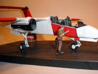

|

Testors 1/48 OV-10A Bronco
Kit #506
MSRP $14.99 $13.49 from Squadron Mail Order
Images and text Copyright © 2012 by Matt Swan
Developmental Background
Imagine two retired Marine officers kicking back in the garage with a couple of cold beers bouncing ideas off one another as to what would be a good example of a simple, rugged close support aircraft for ground units. Imagine that these two guys, basically neighbors have the background to not only come up with a great idea but the wherewithal to get this idea in front of the people who could actually make it happen. Well, the garage and the beer may not be accurate parts to this story but the rest of it is. The setting is more likely the Naval Air Weapons Station China Lake and the players are W. H. Beckett and Colonel K.P. Rice and the concept aircraft is the North American OV-10A Bronco.
The original concept was for a small, lightweight craft that could loiter about an area for two or three hours, carry a medium amount of ordinance, operate from roads and clearings in a STOL capacity and be shipped onto location by boat or truck then assembled on site. This was all being considered in the early 1960s as the current O-1 Bird Dog and O-2 Skymaster were aging out. Beckett had gone to work for North American Aviation so was in a good position to sell the idea and had even constructed a fiberglass prototype in a garage with Rice along with some literature. Well, long story short by 1965 the Bronco was in the air but had gained considerable weight and girth compliments of program add-ons and for the next 30 years was a premier counter-insurgency aircraft (COIN) and forward air control (FAC). During its military life units served with all arms of the US Military as well as with a variety of South American countries. The type also led an interesting civilian career serving with NASA, the Bureau of Land Management and the California Department of Forestry and Fire Protection. The type did not end with the initial A model but continued with a night observation D model and even today an electronically upgraded X model is currently being considered for production.
The Kit
If you want a 1/48 scale Bronco model this kit is your only option and let's be blunt - it's a pig and I'm going to say a lot of bad things about this kit but don't give up yet, it's not a complete lost cause. The box is a classic Testors end opening box but it at least contains an inner tray that so many of them these days do not so you'll have someplace to hold your parts while you try to figure out what to do with them. The sprues inside show their age immediately simply by their layout, it appears that the original layout was for a single large parts tree that is chopped up post production to fit inside the shipping box so things appear fairly disorganized. Looking at the parts right away the fine sprue gates catch your attention (because the parts keep falling off the sprues) followed by the large amounts of flash and heavy mold separation seams. Once you get past these things your fingertips are simply assaulted by the heavy raised rivet detail all over the main crew module and the booms.
The plastic is all white high pressure injection molded material that displays a fairly standard hardness, that is to say it is not overly soft nor excessively brittle so some carving and sanding can be done safely (good thing). Exterior detail is very heavy handed and as previously mentioned, there are some extreme rivet details. The basic profile of the model is not bad but the booms are located too close together and the rudder detail is completely inaccurate. Since we're talking about booms now let's also mention those engines. I'm not sure what they are meant to represent but they certainly are not Bronco engines. Profile and face are total fantasies. If you were not really conversant with the OV-10 series of aircraft you may not notice these issues. Inside the detail goes from poor to terrible. The Bronco in all its derivations was a two place aircraft yet Testors gives us a pilot's seat followed by .... nothing. Aft of the crappy pilot seat we have a completely blank cockpit without even a bulkhead to close off the back of the crew pod. I could ramble on for some time about what's wrong with the interior but that simply depresses me, let's leave it at just plain wrong! Hey, it's not all bad, the small sprue of clear parts are pretty nice with separate side panels, nice raised frame detail and good clarity.
Now let's talk fit. It sucks. You're going to need some patience to get things to line up reasonably on all the large parts then will need a couple of applications of putty and some wet sanding. Note, I said a couple applications. A good sharp Xacto blade would probably be helpful at this juncture as well. Overall you get 71 white plastic pieces and four clear parts for 75 pieces in the box.
You may click on these small images to view larger pictures
Decals and Instructions
This kit has been around for a while and I'm willing to bet that the format of the instruction sheet has most likely changed a bit through the years, what I have is a fairly recent production issue which includes a contemporary instruction format and decals. By 'contemporary format' I mean these are arranged in an A4 booklet form.
Decals provide markings for two aircraft, one Marine unit and one Air Force unit. The decals are of good quality with nice color density and print registry. They cover all the basic markings along with a selection of unit badges, service and warning stencils. As with most Testors decals they react well with your standard setting solutions and present no surprises.
Upgrades
Well, there you have it, the 1/48 Testors OV-10A Bronco with all its pimples and warts but as I said right at the beginning - if you want to build a 1/48 Bronco this kit is your only choice. For those of you who may at this juncture want to bring up the Hawk OV-10 kit don't bother, it is the Testors kit repopped under the Hawk logo. Now there are a few things you can do to help this model out, sadly none of them are terribly accessible these days. Over the last ten or twenty years various manufactures have produced fixes and upgrades for this kit. Unfortunately nearly all of those guys are now out of business but these accessory kits are still floating around vendor tables and on E-Bay. Additionally there are several decal sets out there for both A and D versions along with a few non-military aircraft. Starting with the kit upgrades we have:
Missing Link OV-10A/D Cockpit Set
Missing Link OV-10D Conversion Set
Missing Link OV-10 Engine Set
Paragon Designs OV-10A Correction Set
Paragon Designs OV-10D Conversion and Correction Set
Paragon Designs OV-10 Main and Nose Gear Bays
Royale Resin Replacement Wheels
Swanny's Models OV-10 Engine Set
I'll talk about each of these sets, their good and bad points in a moment but next I would like to look at the decal packages.
Cutting Edge OV-10A/C/D Bronco
Draw Decal California Department of Forestry OV-10 Broncos
Red Gekko Fire Tankers #1
Super Scale OV-10A/D Broncos USAF and USMC
There you have it, all the different sets offered until now to help make this kit better. Each of these sets has good and bad points but in truth anything you do to this kit will improve on it.
The first player on the field was Missing Link, they have been missing in action for many years now but the sets are still kicking around. Missing Link made a good attempt for the time to fix the interior with their cockpit set which included pieces for both the A and D versions of this bird. The detail is fair but the castings in general are chunky. It does include both front and rear crew positions and all appropriate instrument panels. The seats, while better than the kit offering are not super accurate. The engine set offers probably the best engine profile of any of the aftermarket sets however suffers from the chunky casting issue and lacks adequate detail around the upper air vent and the side intakes. The engine set also includes a fairing for the wing to center pod joint which is sorely needed along with new A style exhaust shrouds, new hard-point pylons, flare chute panels and an upper electronics fairing. The exhaust shrouds are better than the kit shrouds by a long shot but are not exactly long enough front to back and do not offer an entirely accurate interior vane set-up. The D conversion set includes a new nose cone, exhaust shrouds with suppressors, two new nose intake vents and corrected propeller blades along with the NVD housing. This set has a large amount of flash, suffers from quite a few air bubbles and has incorrect exhaust shrouds for the D model. Generally speaking you can expect to pay around $20 each for any one of these Missing Link sets.
In 1995 Neil Burkill of Paragon Designs took a very serious shot at upgrading this kit and fixing ALL the issues that he could. Additionally he expanded that effort to include a D conversion as well. The Paragon set first addressed the booms being to close to the fuselage pod by casting a new solid core resin wing and new tail plane. While doing this the engine profile issue was also addressed with the inclusion of new upper scoops however this did not fully capture the correct engine outline, especially around the top where the hot air exhausted across the top of the wing. The Paragon air exit is heavily framed and not accurate. Other than that it was a good effort to fix the engines with minimal effort. The sets also include a variety of electronics noes for the exterior of the aircraft. Inside the cockpit tub is very well done and properly detailed. The A and D sets both include the same photoetched sets to help detail the cockpit and to replace the landing gear bay doors. Both sets also include new corrected rudders and better exhaust shrouds, at least for the A version. The D version includes the new nose of course along with an assortment of other small details unique to the D model. Unfortunately the D model exhaust shrouds do not have the correct profile, the flash suppressors are done such as to make them look like little jet engines rather than the simple sheet-metal covers that they should be. The D set also includes corrected propeller blades that are very clean. Both the A and D sets include new resin weighted wheels to replace the nasty things in the kit. These are better than what we started with but still not perfect, the tread detail on the nose wheel is soft and the hubs are not accurate. All the Paragon stuff is very clean with very few air bubbles. Neil did an outstanding job of creating very nice molds to cast these things. It seems that the next project on the board at Paragon for this kit was a set of landing gear bays and prototype molds were made however to the best of my knowledge only two sets were ever made so don't hold your breath hoping to get your hands on one. As for the conversion/correction sets, when you can find them you can expect to pay upwards of $80 or $90 per set. Yes, they are expensive but they address nearly all the kit issues and they are out there.
Royal Resin is a little cottage industry and has done a very nice and most likely the most accurate set of wheels for the Bronco. Their set does require that the hubs be removed from the kit main gear and everything be drilled for mounting pins. None of this is especially difficult and results in some really nice looking wheels. I guess if you are going to put a maximum effort into your Bronco build you should have a set of these wheels.
Lastly we have the Swanny's Models engine set. Basically I looked at the old Missing Links engine set and liked several aspects of it. However I also found several aspects I did not like. I thought the general, overall shape was the most accurate but that the side scoop and top hot air vent were lacking. I also did not like the shape or detail of the engine exhaust shrouds. From here I retooled the engine plug with a new, deeper side scoop and replaced the vent with a finer, more accurate piece. I also stretched the exhaust shrouds to a more appropriate length and did more accurate interior fin work. I did all this with the intent of simply building my kit but now the molds are made so if you want a set you can contact me directly for pricing and shipping.
Construction
Now that I have gathered every possible add-on I could imagine for this kit I guess it is time to start building something. First though I need an overall plan, just what am I really going to build here? I'm tired of building military aircraft right now, I want to build something different but there are not a lot of civilian options out there for the Bronco. The California Fire aircraft are pretty attractive so I settled on that as my goal. This means the weapons sponsons will not be mounted on the aircraft and the deep insets on the fuselage pod must be filled. That is done with layers of Bondo auto body glazing followed with a thin layer of Mr. Surfacer 500 and all sanded smooth. I want to use the Paragon wing so might as well use the Paragon interior as well. Now here is a slight accuracy issue for the particular aircraft being modeled, the CDF aircraft do not have ejection seats but the Paragon cockpit tub does. Oh well, I'm not going to sweat the small stuff right here and will leave the ejection seats as they are. Below you can see a test fit of the cockpit tub and the Paragon nose bay. It seemed kind of tight and lots of sanding was required to get both pieces in there. I hoped at this point they would provide enough weight to keep the nose on the ground as I did not see much of any place to stick lead weights. I should have looked harder because when I got done she did end up being a tail sitter.
You may click on these small images to view larger pictures
Note the thin plastic shims I placed around the sides and rear area of the wing mount, this was needed to get a good, snug fit with the Paragon wing and eliminate some larger gaps.
8/13/12
The main crew pod may have seemed like fun but the real fun is in the engine booms. Here I'm going to be doing lots of modification. First off I am using the Paragon wing to get the booms spread out to where they should be and this by itself requires no modification of the booms however since I will be using the Paragon prototype landing gear bays which are designed to work with the Testors wing the Paragon wing will need some modification. Additionally I will be using my re-tooled engine nacelles which dictate surgery to the booms and to the wing. Since they tell me pictures are worth a thousand words let me direct your attention to the three images below, first we have the Paragon main gear bays. The top area of these needs to be sanded down a lot and even getting to near transparency over the wheel area it still will not fit to the wing. See in the image at far left one virgin bay and one modified bay. Next we look at the boom and the new engine nacelle. In the center image we see the gear bay fit and the cut line for the new nacelle. Note that the front of the gear bay extends into the nacelle somewhat so that part will next a concave area ground into the inside surface. In the third image (far right) we have the underside of the wing with an area ground out to fit the top of the wheel bay. I'll also be cutting the leading edge of the wing to fit the nacelle. This is necessary to remove the incorrect top vent detail from the Paragon wing. The new nacelle will have the correct vent detail on it.
You may click on these images to view larger pictures
After a lot of careful sanding, filing and test fitting I had both booms converted and the wing fitting in place nicely. The new stabilizer is a direct drop in replacement for the kit part once the new main wing has been fitted so no big deal there. The paragon set includes new rudders but I did not use them - mostly because I simply forgot to (DoH!).
 In the first image we have the primary sub-assemblies at a test fit stage. The time spent filing and repeatedly fitting parts really pays off now as there are few gaps and the overall fit is pretty snug, exactly what I want. In the next image the parts are all glued together with medium gap filling superglue. Under the wing at the fuselage pod I did have to fill a small gap with some Bondo glazing compound and on top you can see where I have layered on some Mr. Surfacer 500. Once completely cured these areas will be sanded smooth. Next up is some masking and paint.
In the first image we have the primary sub-assemblies at a test fit stage. The time spent filing and repeatedly fitting parts really pays off now as there are few gaps and the overall fit is pretty snug, exactly what I want. In the next image the parts are all glued together with medium gap filling superglue. Under the wing at the fuselage pod I did have to fill a small gap with some Bondo glazing compound and on top you can see where I have layered on some Mr. Surfacer 500. Once completely cured these areas will be sanded smooth. Next up is some masking and paint.
Painting; now this is an adventure. I begin with a basic pattern of flat black preshaded lines followed by an overall coat of flat white. Once this has dried down I cut thin lines of masking tape and applied them for the white pinstripes. Now these areas are airbrushed flat black and allowed to dry. More tape is applied and then flat red is shot onto the model. Now the tape can be removed leaving a nice red, black and white pattern. Sounds easy, eh? It's really a lot of work and has to be repeated for the wingtips, tail surfaces and cheater bands around the exhaust shrouds so many, many hours are tired up in paint application here.
You may click on these images to view larger pictures
8/14/12
Now we are getting down to the little details. A variety of little actuator levers and mass balancers are attached to the control surfaces with medium superglue and the clear parts are treated with Future. The landing gear needs some serious attention as the original Testors design is very clunky with all the struts merged into a solid mass. There is no aftermarket strut package for this kit so delicate surgery is the solution. Using my Dremel with a fine burr bit I open up the interior areas and reshape the struts. Thin strips of sandpaper are used to polish the surfaces and the mounting points are trimmed to fit the Paragon connection points. New PE oleo braces are installed and magnet wire brake lines are placed with thin strips of masking tape as attachment clamps. The nose gear gets some attention as well with the big block of plastic used by Testors as a mounting point being removed, the strut ends trimmed to fit the bay mounting points and the nose wheel being entirely removed. The nose wheel yoke is bored out as is the new resin nose wheel and a copper pin is inserted as an axel. Since I have already identified this model as a tail sitter I will be attaching it to a PSP base and having a solid, secure nose gear is critical. Gear are painted flat white and some silver details are picked out, the wheels and tires are painted (using the Paragon set here) and installed. The Testors hubs on the main gear needed to be thinned a little before securing the wheels but everything went together very well.
I picked up a piece of PSP from Eduard and airbrushed it with Alclad steel as my display base. I'll add a little ground effect soon with model railroad ballast and white glue. The clear parts have had time to dry and are masked for painting. They are first shot with some medium gray for interior frame color then hit with flat white. The inside of the top glazing is airbrushed with several very light coats of Tamiya clear green which came out very nice. The model as a whole is sealed with Future and allowed to dry prior to getting some decals and sludge wash.
Inside the windscreen we have an overhead console that would normally house a heads-up display. I'm not sure if the CDF unit retained the heads-up display but I do know there is still a console there. This part comes from the Paragon set and I retained the HUD. Also from the Paragon set are two rear view mirrors mounted to either side of the console. Crew figures are put together from various body parts from the 1/48 and 1/50 Preiser figure kits. Decals are from the Red Gekko sheet.

Construction Update 8/19/12
At long last this project is drawing to a close. All decals are dry now and the model is sealed with Squadron Micro-Flat. The clear parts are attached with a combination of superglue and clear parts cement. Some adjustments were necessary to the top and side panels to acquire a good fit but nothing serious. The last thing to do is get this baby secured to the base. For the nose gear I am using a piece of 14 gauge THHN wire which will not only insert into the wheel but through the base as well. Now this wire is still too thick for the hole in the wheel but the nice thing with THHN wire is you can peel off strands until you have the thickness desired. Additionally by being a collection of strands I have lots of surface area to bond to the superglue giving a very secure attachment. On the main gear I used a burr bit to scoop out small indentations under the tires and in the base to give the glue plenty of surface texture to bond to. I think that is it, she is a done deal now.
|


{kind=link}
{kind=link}
{kind=link}
{kind=link}
{kind=link}
{kind=link}
{kind=link}
{kind=link}
{kind=link}
{kind=link}
{kind=link}
{kind=link}
{kind=link}
{kind=link}
{kind=link}
{kind=link}
{kind=link}
{kind=link}
{kind=link}
{kind=link}
{kind=link}
{kind=link}
{kind=link}
{kind=link}
{kind=link}
{kind=link}
{kind=link}
{kind=link}
{kind=link}
{kind=link}
{kind=link}
{kind=link}
{kind=link}
{kind=link}
{kind=link}
{kind=link}
{kind=link}
{kind=link}